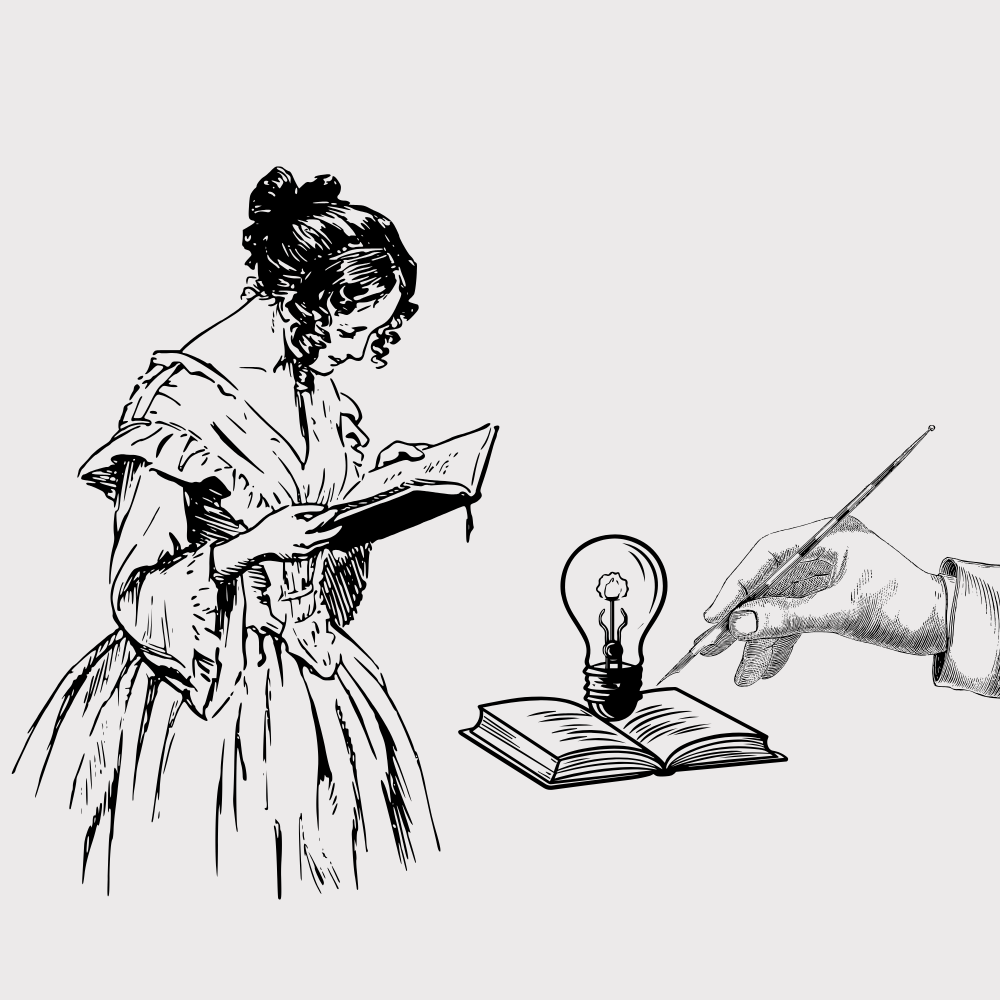

Enlaces externos

Aquí encontrarás una selección de recursos adicionales que pueden enriquecer tu experiencia con Jane Eyre.
- Enlace a SparkNotes
- Enlace a LitCharts
- Enlace a Cliffs Notes
- Enlace a Shmoop
- Enlace a The Victorian Web
- Guías de lectura adicionales:
- Enlaces sobre el contexto histórico:
- Enlaces sobre Charlotte Brönte:
- Enlaces sobre Jane Eyre:
- Otros recursos interesantes: